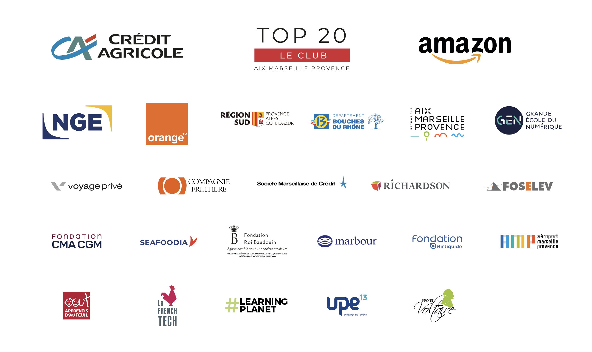

<!DOCTYPE html>
<html lang="fr">
  <head>
    <meta charset="UTF-8" />
    <meta http-equiv="X-UA-Compatible" content="IE=edge" />
    <meta name="viewport" content="width=device-width, initial-scale=1.0" />
    <link rel="stylesheet" href="laplateforme.css" />
    <link rel="preconnect" href="https://fonts.googleapis.com" />
    <link rel="preconnect" href="https://fonts.gstatic.com" crossorigin />
    <link
      href="https://fonts.googleapis.com/css2?family=Roboto+Slab&display=swap"
      rel="stylesheet"
    />
    <title>qui-sommes-nous ?</title>
  </head>
</html>

<body class="qui-sommes-nous-body">
  <header>
    <a class="laplateforme_logo" href="accueil.html">
      
    </a>
    <ul class="header1">
      <a class="link" href="qui-sommes-nous.html"><li>Qui sommes nous</li></a>
      <a class="link" href="aws-restart.html"><li>AWS Restart</li></a>
      <a class="link" href="plateforme-start.html"
        ><li>La plateforme Start</li></a
      >
      <a class="link" href="news.html"><li>News</li></a>
      <a class="link" href="contact.html"><li>Contact</li></a>
    </ul>
  </header>
  <main>
    <div class="titre-qui-sommes-nous">
      <h1><span>Qui sommes nous ?</span></h1>
    </div>

    <div class="qui-sommes-nous-txt">
      <p class="TXT">
        La Plateforme_ est une école du numérique et des nouvelles technologies
        co-fondée avec le Club Top 20 réunissant les grandes entreprises de la
        Métropole Aix Marseille. Elle comprend une offre de formations
        diversifiées destinées à former des codeurs et développeurs web, des
        experts en sécurité, des ingénieurs spécialisés en Intelligence
        Artificielle, et des cadres d’entreprises au travers de cycles de
        formations continues.
      </p>
      <p class="TXT">
        La Plateforme_ est membre du programme Grande Ecole du Numérique. Elle
        est soutenue par de grandes entreprises du territoire comme le Crédit
        Agricole Alpes Provence, par la Région Sud, le Département des Bouches
        du Rhône et la Métropole Aix Marseille Provence.
      </p>
    </div>

    <div class="box-partenariat">
      <div class="titre-qui-sommes-nous">
        <h1><span>Nos partenaraires</span></h1>
      </div>
      
    </div>

    <div class="titre-qui-sommes-nous">
      <h1><span>Nos certifications</span></h1>
    </div>
    <div class="nos-certs">
      <p class="nos-certs-txt">
        <span>La Plateforme Marseille</span> a obtenu la certification qualité
        depuis le 18 septembre 2020 au titre de la catégorie des actions de
        formation. <br />
        <br />
        <span>La Plateforme Formation</span> a obtenu la certification qualité
        depuis le 23 mai 2022 au titre des catégories des actions de formation,
        bilans de compétences, actions de formation par apprentissage.
        
      </p>
      <p class="nos-certs-txt">
        La Plateforme_ est membre de l’<span>April</span>, soutient et contribue
        à des projets <span>Open Source</span>.
        <br />
        <br />
        L’<span>AFCDP </span> est une association pionnière du logiciel libre en
        France. Elle démocratise la diffusion du logiciel libre et des standards
        ouverts auprès du grand public, des professionnels et des institutions.
        
      </p>

      <p class="nos-certs-txt">
        La Plateforme_ est membre de l’<span>AFCDP</span>.
        <br /><br />
        L’<span>AFCDP </span> est L’Association Française des Correspondants à
        la protection des Données à caractère Personnel. Elle regroupe les
        Délégués à la protection des données (DPO) et tous les professionnels de
        la conformité, RGPD, CNIL.
        
      </p>

      <p class="nos-certs-txt">
        La formation est accessible aux personnes handicapées. L’école est
        équipée d’un ascenseur pour accéder aux étages. Une place de parking est
        prévue à proximité l’école. <br />
        
      </p>
    </div>

    <div class="présentation">
      <div class="titre-qui-sommes-nous">
        <h1><span>Présentation</span></h1>
      </div>

      <div class="video-presentation">
        <div class="box-video">
          <iframe
            class="presentation-video"
            src="https://www.youtube.com/embed/8U4CCAFLqEs"
            frameborder="0"
          ></iframe>
          <div class="nom"><p>Cyril Zimmermann</p></div>
          <div class="fonction"><p>Fondateur de La Plateforme_</p></div>
        </div>

        <div class="box-video">
          <iframe
            class="presentation-video"
            src="https://www.youtube.com/embed/ayqMxjEtYNk"
            frameborder="0"
          ></iframe>
          <div class="nom"><p>Denis Philipon</p></div>
          <div class="fonction"><p>Président du Top20</p></div>
        </div>

        <div class="box-video">
          <iframe
            class="presentation-video"
            src="https://www.youtube.com/embed/HSLFwNbZdgc"
            frameborder="0"
          ></iframe>
          <div class="nom"><p>Serge Magdeleine</p></div>
          <div class="fonction">
            <p>Directeur Général du Crédit Agricole Alpes-Provence</p>
          </div>
        </div>
      </div>
    </div>
  </main>
  <footer>
    <div class="footer1">
      <div class="colone1">
        
        <div class="logo">
          

          

          

          

          
        </div>
      </div>

      <div class="colone2">
        <h3><span>La Plateforme</span></h3>
        <p>Accueil</p>
        <p>Qui sommes-nous ?</p>
        <p>Nore brochure</p>
        <p>Il parlent de nous</p>
        <p>Annuaire des Plateformeurs</p>
        <p>Alumni des Plateformeurs</p>
        <p>Tache d'apprentissage</p>
      </div>
      <div class="colone3">
        <h3><span>Les formations</span></h3>
        <p>La Plateforme/start</p>
        <p>Coding School</p>
        <p>Bachelor IT</p>
        <p>Artificial Intelligence School</p>
        <p>cyber Security School</p>
      </div>
      <div class="colone4">
        <h3><span>Information</span></h3>
        <p>8 rue d'hozier, 13002 Marseille</p>
        <p>Tel: 04.84.89.43.69</p>
        <div class="colone4IMG">
          
        </div>
      </div>
    </div>
    <div class="footer2">
      <p>
        © La Plateforme. Tous droits réservés. | Mentions légales | Cookies |
        Référent handicap : Jessica Soriano
      </p>
      <div class="logofooter2">
        

        

        

        
      </div>
    </div>
  </footer>
</body>
